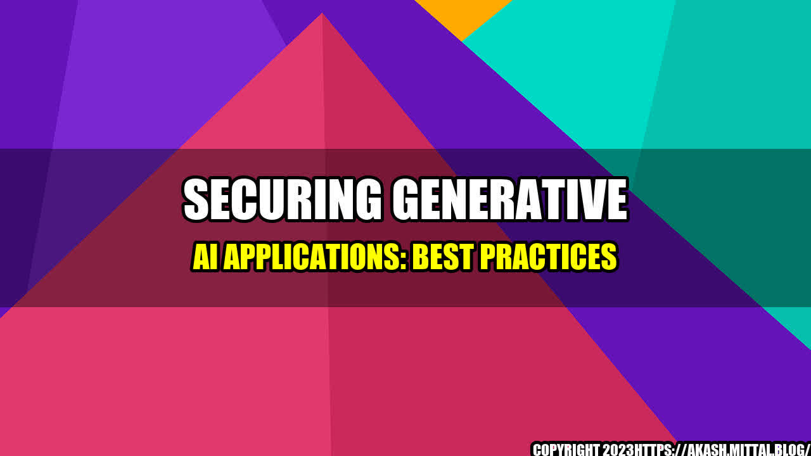

The Importance of Securing Generative AI

Recently, a major financial services firm became the victim of a cyberattack that exploited a flaw in the firm's generative AI application. The hackers used the application's image recognition and language processing capabilities to extract sensitive customer data. The incident not only cost the company millions in damages, but it also eroded its customers' trust in its ability to safeguard their personal information.
This story is just one example of the dangers posed by unsecured generative AI applications. As more businesses and organizations adopt AI to streamline their operations and improve their services, it's essential that they take the necessary steps to secure their AI systems.
Why Generative AI is Vulnerable to Cyberattacks
Generative AI refers to a type of AI that can create new content, such as images, videos, and text, that is indistinguishable from human-created content. One of the hallmarks of generative AI is that it is trained on huge datasets of real-world content, which means that it has the potential to absorb and reproduce any biases or inaccuracies that exist in that content.
Because generative AI applications are so complex and data-intensive, they can be difficult to secure against cyberattacks. Here are some of the key reasons why:
- Complexity: Generative AI models are made up of many different components, such as neural networks, decision trees, and probability distributions. This complexity makes it difficult to identify and address vulnerabilities.
- Data Sensitivity: Generative AI models are typically trained on sensitive data, such as financial records or medical histories. This data is a prime target for cybercriminals seeking to steal or manipulate it.
- Error Propagation: Because generative AI applications are based on statistical models, errors in the input data or algorithms can lead to significant errors in the output data. These errors can be exploited by cyberattackers to create false or misleading content.
Best Practices for Securing Generative AI Applications
Despite the challenges involved in securing generative AI, there are steps that businesses and organizations can take to reduce their vulnerability to cyberattacks.
- Use Secure Infrastructure: Generative AI applications should be hosted on secure, cloud-based infrastructure that is regularly tested for vulnerabilities. Businesses should also implement rigorous access controls to ensure that only authorized personnel can access the AI systems.
- Implement Strong Encryption: Sensitive data used in generative AI training and operations should be encrypted using strong encryption algorithms. This will reduce the risk of data theft and manipulation by cybercriminals.
- Regularly Monitor and Update AI Systems: Businesses should regularly monitor their generative AI applications for signs of cyberattacks or unusual behavior. They should also regularly update their AI systems with the latest security patches and software updates to reduce the risk of vulnerabilities.
Conclusion: The Importance of Securing Generative AI
Generative AI has the potential to revolutionize many industries and improve the lives of millions of people. However, this potential cannot be realized if businesses and organizations do not take the necessary steps to secure their AI systems.
- Generative AI applications are vulnerable to cyberattacks due to their complexity, data sensitivity, and error propagation.
- Businesses and organizations can reduce their vulnerability to cyberattacks by using secure infrastructure, implementing strong encryption, and regularly monitoring and updating their AI systems.
- Securing generative AI is essential for protecting sensitive data, maintaining customer trust, and ensuring the long-term success of businesses and organizations.
References
Hashtags and Categories
- Hashtags: #GenerativeAI #Cybersecurity #SecureAI #CloudSecurity
- Category: Technology/Security
Curated by Team Akash.Mittal.Blog
Share on Twitter Share on LinkedIn